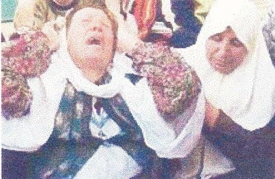

cormac.boomer
From: Don Mullan (dbmullan@indigo.ie)
To: cormac. boomer (cormac.boomer@ntlworld.com)
Sent: 21 November 2002 03:05
Subject: Assassination of Fathi Shiqaqi
Cormac,
I came across this on the internet. As you will see, the Maltese police recovered the motorcycle.
Don
State-Sponsored Assassinations by Agents of the Israeli Government
Fathi Shiqaqi
Oct. 26, 1995. The Israeli Mossad secret service assassinated Palestinian leader Dr. Fathi Shiqaqi.
Thursday, Oct. 26, 1995. Shiqaqi was shot in broad daylight in Malta.
Maltese police said Dr. Shiqaqi was killed in a "professional job" as he walked out of his hotel in Sliema, outside the capital, Valletta.
He was approached by two men riding a motorcycle, and was shot five times in the head with a silenced gun. The assailants later abandoned their vehicle, which had false licence plates.
Dr. Shiqaqi was a medical doctor and a former Gazan who was deported in 1991 and had been living in Damascus.
Israel has not admitted carrying out the assassination but hardly bothered to deny it was involved.
Prime Minister Yizhak Rabin, said he knew nothing about the killing of Dr. Shiqaqi. When asked if he would express remorse over his governments policy of state-sponsored assassinations or the death of Shiqaqi, Rabin replied, "I won't be sorry."
Israeli newspapers praised the "long arm" of Israel and welcomed its determination to "smash the Palestinian vipers head". The assassination of Dr. Shiqaqi required "exceptional operational ability", boasted Yaacov Erez, editor of Maariv. one of the largest Israeli daily newspapers.
On November 18, 1996, an Israeli military court in Jaffa sentenced four Israeli undercover unit officers to one hour in jail and fined them one agora (about 1/3 of a cent) for assassinating the wrong Palestinian in 1993. This incident reflects the racist contempt for Palestinian life present in most sectors of lsraeli society.
23/11/12
Former Associated Press Reporter Analyzes Orwellian Media Manipulation:
Jewish Assassination and Media Doublethink
The Israeli Terrorist State and its Mossad Assassins
Inside the Mossad Assassination Apparatus: The Israeli Prime Minister Orders a Murder
Israeli Agents Use High Tech Murder Weapon in Attack on Khaled Meshal-Government of Canada is linked to Mossad Assassination Attempt
Israeli Holocaust Against Arabs / archives / news / bookstore
Copyright© 1996-2002 by Michael Hoffman
Please send donations to:
Independent History & Research Box 849, Coeur d'Alene, ID 83816
Donate online by VlSA or Mastercard
(if donating online, be sure to "select quantity")
23/11/12
Israeli Assassinations Page 1 of 12
State-Sponsored Assassinations by Agents of the Israeli Government
Palestinian leader's son victim of Israeli terror bombing
Bystanders and police in Beirut examine the remains of the automobile of Mohammed Jibril, the son of Palestinian leader Ahmed Jibril. On May 20, 2002 Jibril was killed by a car bomb. The terror bombing was the work of the Israeli government's Mossad secret service, which is subsidized by American taxpayers as part of the US government’s "War on terror", a euphemism for terrorizing opponents of Zionism. The victim's foot can be seen dangling from the wreckage in the photo above.
Mohammed Jibril
23/11/12
Israeli Assassinations Page 2 of 12
Lebanese Witness who was to Testify Against Sharon is Blown Up
Bombed remains of Elie Hobeika's vehicle, detonated by remote-control
Elie Hobeika, a key witness in the Sabra-Chatila war crimes case being pursued in a Belgian court against Israeli prime minister Ariel Sharon, was blown up outside his house in Beirut on Jan. 24, 2002, together with three bodyguards and a civilian bystander. The car-bomb was the work of professional assassins in the employ of Mossad, the Israeli secret service. The explosion occured two days after Hobeika agreed to give evidence against Sharon in Belgium. Hobeika had met Belgian Senators Josy Dubie and Vincent van Quickenborne in east Beirut, agreeing to be a witness at any trial of Sharon for the Sabra and Chatila massacre.
Hobeika
Belgian lawyers seeking to indict Sharon expressed their "profound shock" at Hobeika's murder. "Mr Hobeika had several times expressed his wish to assist the Belgian inquiry on the massacres at Sabra and Chatila", a statement from the Belgian lawyers said, "His determination to do so was reported widely on the eve of his assassination. The elimination of the key protagonist who offered to assist with the inquiry is an obvious attempt to undermine our case." Marwan Hamadeh, the Lebanese minister for refugees stated,"My initial evaluation is that of course Israel doesn't want witnesses against it in this historic case in Belgium..." Israeli Prime Minister Sharon dismissed the charges: "I am simply saying, from our point of view, we have no link to this subject at all, and this is not worthy of a comment", Sharon told reporters.
23/11/12
Israeli Assassinations Page 3 of 12
Israelis Plant Bomb that Kills Palestinian Resistance Leader
On January 14, 2002 Israeli terrorists planted a bomb outside the Tulkarm home of Palestinian resistance leader Raed al-Karmi, killing him. He is shown above with a bandaged wound incurred in an earlier Israeli attempt on his life.
Palestinian Activist Murdered by Israelis
The body of Palestinian activist Yacoub Aidkadik, 28, who was assassinated in the West Bank town of Hebron in the early morning of Monday Dec. 17, 2001 by Israeli troops.
Palestinian Activist Blinded and Burned by Israelis
Hebron, Dec. 10, 2001. Palestinian activist Muhammad Sidir, 24, had his face maimed and burned and his eyes blinded by a U.S. made Israeli helicopter firing missiles in a crowded intersection during an assassination attempt on Sidir. Two Palestinian children died in the attacks and two other children were injured. Israeli helicopter gunships hovered over the carnage for five minutes preventing immediate medical attention from being administered to the wounded and dying.
23/11/12
Israeli Assassinations Page 4 of 12
The Strategy Behind the Israeli Assassination of Mahmoud Abu Hanoud
Mahmoud Abu Hanoud was assassinated when Israelis bombed the car in which he was traveling near Nablus, on November 23, 2001
...while the Israelis say they've always gone after ‘terrorist‘ targets ...they've in fact also gone after those members of the Palestinian leadership who have two important attributes: One, they were interested in a two-state solution, and two, they were the kind of people who were strong enough to be the peace party in Palestinian leadership. Most of these guys have been killed. Frankly, I have long suspected the Israeli strategy is to kill the moderate Palestinians as well as militants and send this thing careering towards an endgame where Israel has the extremist enemy it wants.
...one need only consult an exceptional recent story in the right-of-center Israeli daily Yediot Ahronot for confirmation of this idea. On November 25, Alex Fishman, the paper's security expert reported that the Israeli government was aware that the Palestinian Authority had finally prevailed on Hamas in mid November to accept a quiet, tenuous deal in which Hamas would refrain from any suicide attacks within Israel's pre-1967 borders.
All bets were off, however, alfer the November 23 Israeli assassination of Hamas leader Mahmoud Abu Hanoud which, according to Fishman, was exactly what Sharon's government wanted. "Whoever gave a green light to this act of liquidation knew full well that he is thereby shattering in one blow the gentleman's agreement between Hamas and the Palestinian Authority", Fishman wrote. 2Whoever decided upon the liquidation of Abu Hunud knew in advance that that would be the price. The subject was extensively discussed both by Israel‘s military echelon and its political one, before it was decided to carry out the liquidation. Now, the security bodies assume that Hamas will embark on a concerted effort to carry out suicide bombings, and preparations are made accordingly."
...Sharon is driving Palestinian society more and more to the right, to the fanatics, which is calculated to create the results he wants.
...In 1923, radical Zionist Ze'ev Jabotinsky - spiritual father of not only of Menachem Begin but of Meir Kahane wrote that the "sole way" for Jews to deal with Arabs in Palestine was through ‘total avoidance of all attempts to arrive at a settlement, which Jabotinsky euphemistically termed the "Iron wall" approach. Not coincidentally, a picture of Jabotinsky graces Sharon‘s desk.
"Death Wish in the Holy Land," Village Voice, Dec. 12, 2001
23/11/12
Israeli Assassinations Page 5 of 12
Israelis Assassinate Palestinian Leader
Abu Ali Mustafa. 63, was murdered in the Palestinian city of Ramallah on Aug. 27, 2001. Mustafa, a leader of the Palestinian people, was killed when Israeli pilots flying US supplied-helicopter gunships. blasted his office.
Israelis Assassinate 18 year old Palestinian
The automobile of an 18 year old Palestinian incinerated by an Israeli death squad at the Bureij refugee camp, outside the Gaza ghetto, Aug. 22, 2001. The Israelis sought to assassinate his father. The teenage son was killed instead. Murders of goyim (non-Jews) in this manner are dismissed as "collateral damage" by the Judeo-masonic establishment in America.
The boy's mother (second from lefi) and sisters mourn his slaying by Jewish assassins, Aug. 22, 200123/11/12
Israeli Assassinations Page 6 of 12
Israelis Assassinate 27 year old Palestinian
27 year old Emad Abu Sneineh was assassinated by Israeli agents outside his home in Hebron, on August 15, 2001.
Israelis Assassinate 23 year old Palestinian
Palestinian boys look over the twisted wreckage of the bombed car carrying Amer Mansour Habiri 23, who was assassinated by Israelis in a missile attack on Aug. 5, 2001 in the West Bank town of Tulkarem.
23/11/12
Israeli Assassinations Page 7 of 12
Iraelis ASsassinate Two Palestinian Leaders
On July 31, 2001 the Israeli government assassinated Palestinian leaders Jamal Mansour and his cousin Omar Mansour (pictured in the photo above), in an attack on their office in the West Bank town of Nablus. Six other Palestinians were killed in the Jewish ambush, including two little boys.
Jews Take Out Newspaper Advertisement Urging Assassination Of Arafat
An advertisement published July 20, 2001 in a paper in the Israeli state urged anyone who has the opportunity to murder Palestinian Authority President Yasser Arafat. The ad, published in the Israeli "Maker Rishon" newspaper was paid for by Moshe Feiglin and three other Jews.
Attempted Assassination of Jibril Rajoub
The family home of Jibril Rajoub, after blasts by Israeli tanks
On May 20, 2001 Israeli Prime Minister Ariel Sharon ordered the murder of Jibril Rajoub by bombing his home in Ramallah. All told, his house was hit from three sides, his car was destroyed, and his 11-year-old son's bedroom was left with bullet-pocked walls.
Israeli authorities have adamantly denied that they were trying to assassinate Mr. Rajoub, known
23/11/12
Israeli Assassinations Page 8 of 12
as one of the more moderate and pragmatic Palestinian officials. Talmudic liar Benjamin Ben Eliezer, the Jewish "Defense" Minister was caught in yet another Israeli lie when he claimed that Israeli army troops were only retuming fire after "massive fire" was directed at them from the grounds of Mr. Rajoub‘s home. This Jewish liar also said that the Israeli troops did not know at whose home they were aiming their tanks. An Israeli army field commander, however, Lieutenant Colonel Erez Weiner, contradicted Eliezer's official position by saying on the Israeli radio May 21 that he knew very well to whom the house belonged. Army officials quickly said that Lt. Col. Weiner‘s statement was "an error." Rajoub is certain he was personally targeted, just as Mohammed Dahlan, the Palestinian oflicial in Gaza, must have been targeted when his Jeep was riddled with bullets by Israeli troops earlier this year (2001). The Israeli government, Rajoub said, was acting "like a Mafia." "Mine is one in a series of attacks in the last three weeks," Mr. Rajoub said. "I think it's part of a policy to undermine the Palestinian Authority and make it collapse." Some Israelis viewed the incident similarly. Akiva Eldar, a senior columnist for the newspaper Haaretz, said: "The shelling of Jibril Rajoub's house removes any remaining doubts. Ariel Sharon has decided to turn the Palestinian Authority into the enemy."
Rajoub's house is well-known. Neighbors say shooting never originates fi"om Mr. Rajoub‘s house.
The Jewish-American ambassador to the Israeli state. Martin Indyk, who rarely engages in such public criticism, said on Monday that the Israeli Army Forces were now counterproductively "hitting" (Mafia euphemism for assassination) those who were in a position to stop the violence, like Palestinian police oflicers and Mr. Rajoub."Maybe the strategy is to encourage them to act against their own people." Mr. Indyk said in an address at Ben Gurion University in Beersheva, "but l don‘t imagine there is an example in history where such a strategy has succeeded."
For further research:
"How to make enemies and influence friends", Ha‘aretz, May 22, 2001
"Leading Palestinian Shows Off His Home Shelled by Israelis", NY Times, May 22, 2001
Massoud Ayyad
The burning shell of Massoud Ayyad's car after the missile attack by Israeli helicopters
Palestinian Massoud Ayyad, age 54, by Israeli missile attack on his automobile by two American-made Apache helicopters, in the Jabaliya refugee camp in northern Gaza, Feb. l3, 200l. "The
23/11/12
Israeli Assassinations Page 9 of 12
Israeli army acknowledged Mr. Ayyad's assassination..." saying such assassinations, "...have chilling effects on Palestinian violence...Ehud Barak, the caretaker prime minister, sent congratulations to the army and security services, declaring that the killing sent this message to those who would attack Israel: ‘The long arm of the Israeli Defense Forces will reach them." (NY Times, p. A-3, Feb. 14, 2001).
"The (Israeli) government says the killings...are legitimate acts of war to save Israeli lives." (Daily Telegraph -London, England- Feb. 14, 2001)
"Prime Minister Ehud Barak authorized the strike and told PM-elect Ariel Sharon of it: "Anyone who intends to harm Israelis will not escape. and the long arm of the Israel Defense Forces will know how to locate and even the score with him", Barak said in a statement." (Ha‘aretz, Feb. l4, 2001)
Dr. Thabeth Thabeth

Dr. Thabeths mother learning the news of her son's murder
A local Palestinian leader in the town of Tulkann was shot dead by the Israeli anny as he drove out of his driveway, Dec. 31, 2000. Thabet Thabet was a senior member of Yasser Arafat's Fatah movement. The assassination was the latest of 20 Palestinians who have been targeted and murdered by the Israeli army or Israeli undercover units. Dr. Thabet, a dentist, had worked for Physicians for Human Rights in furnishing medical aid to Palestinians wounded and disabled by Israeli gunfire. The Fatah leader on the West Bank, Marwan Barghouthi, said the Israeli Prime Minister, Ehud Barak, must have personally approved the killing. Cf. Daily Telegraph (London) Jan. 1, 2001.
Time magazine justified Dr. Thabet's murder by describing him as a leader of Fatah (the legally recognized Palestinian political party) in an area of the Palestinian ghetto where there had been unrest. This is akin to justifying the murder of a black dentist by the L.A.P.D. because he was a leader of the Democratic party in an area of the Los Angeles ghetto experiencing unrest. (Cf. caption under Dr. Thabet‘s photograph in Time magazine, Jan. 15, 2001; hard-copy edition).
23/11/12
Israeli Assassinations Page 10 of 12
Ibrahim Bani Odeh
Funeral procession for Ibrahim Bani Odeh
Palstinian Ibrahim Bani Odeh was assassinated by the Israelis, Nov. 22, 2000
Other Arab Victims of Jewish Assassins:
On October 16th, I972, Israeli Mossad agents assassinated Wail Zia‘ter.
On December 18, 1972, the Israelis assassinated Mahmoud Al-Hamshri.
In July, 1972, the Israelis assassinated the well known Palestinian writer, Ghassan Kanafani, whose car was bobby trapped by the Israelis. Kanafani's niece, 9 years old, was also killed.
On April I0, 1973, the Israelis assassinated 3 Palestinians including a poet and a joumalist, Kammal Nasser, Mohammad Youssef Al-Najar).
On August 1, 1978, a Palestinian wiiter, Izz Al-Din Al-Qalaq, was assassinated by the Israelis along with his secretary.
On June 1, I981, the Palestinian Representative to Brussels, Naim Khadr, was assassinated.
Abbas Musawi
Feb 16, 1992, An Israeli Defense Forces (IDF) helicopter attacked the automobile of Arab leader Abbas Musawi today in Lebanon. The Israeli helicopter fired rockets at the car and Mussawi and his family died a grsily death. Burned alive along with Mussawi, was his wife Siham and their infant child. Two other cars carrying Mussawi's aides were also rocketed by the Israelis. When another automobile arrived to pick up the wounded survivors, the Israeli helicopter returned and destroyed the vehicle carrying the wounded.
"The opportunity to hit someone like Musawi does not present itself every day", an Israeli official involved in the planning of the assassination said. In Jerusalem a senior Israeli adviser said Musawi's death "is good for Israel."
Hani Abed
November, I994. Israeli Secret Service agents from the Mossad planted a car-bomb this month. Palestinian leader Hani Abed was killed as a result of the Mossad booby-trap.
23/11/12
Israeli Assassinations Page 11 of 12
Mahmud el-Khawaja
June 22, 1995. The Mossad, the Israeli secret service, assassinated a Palestinian leader in the Gaza Strip today. Mahmud el-Khawaja, 34, who worked in the United Nations refugee programme, UNWRA, was shot to death as he was walking to work. Khawaja was shot as three men drove past him in the Shatti refugee camp in a blue Peugeot 404. Two Israeli gunmen in the car fired pistols fitted with silencers, hitting him in the head and chest. The Palestinian Authority condemned the murder as an act of terrorism and launched a search for the gunmen.
Fathi Shiqaqi
Oct. 26, 1995. The Israeli Mossad secret service assassinated Palestinian leader Dr. Fathi Shiqaqi. Thursday, Oct. 26, 1995. Shiqaqi was shot in broad daylight in Malta. Maltese police said Dr. Shiqaqi was killed in a "professional job" as he walked out of his hotel in Sliema, outside the capital, Valletta. He was approached by two men riding a motorcycle, and was shot five times in the head with a silenced gun. The assailants later abandoned their vehicle, which had false licence plates.
Dr. Shiqaqi was a medical doctor and a former Gazan who was deported in 1991 and had been living in Damascus. Israel has not admitted carrying out the assassination but hardly bothered to deny it was involved. Prime Minister Yizhak Rabin, said he knew nothing about the killing of Dr. Shiqaqi. When asked if he would express remorse over his government's policy of state-sponsored assassinations or the death of Shiqaqi, Rabin replied, "I won‘t be sorry."
Israeli newspapers praised the "long arm" of Israel and welcomed its determination to "smash the Palestinian viper's head". The assassination of Dr. Shiqaqi required "exceptional operational ability", boasted Yaacov Erez, editor of Maariv, one of the largest Israeli daily newspapers.
On November 18, 1996, an Israeli military court in Jaffa sentenced four Israeli undercover unit officers to one hour in jail and fined them one agora (about 1/3 of a cent) for assassinating the wrong Palestinian in 1993. This incident reflects the racist contempt for Palestinian life present in most sectors of Israeli society.
Former Associated Press Reporter Analyzes Orwellian Media Manipulation:
Jewish Assassination and Media Doublethink
The Israeli Terrorist State and its Mossad Assassins
Inside the Mossad Assassination Apparatus: The Israeli Prime Minister Orders a Murder
Israeli Agents Use High Tech Murder Weapon in Attack on Khaled Meshal-Government of Canada is linked to Mossad Assassination Attempt
Israeli Holocaust Against Arabs / archives / news / bookstore
Copyright© 1996-2002 by Michael Hoffman
Please send donations to:
Independent History & Research Box 849, Coeur d'Alene, ID 83816
Donate online by VlSA or Mastercard
(if donating online, be sure to "select quantity")
23/11/12